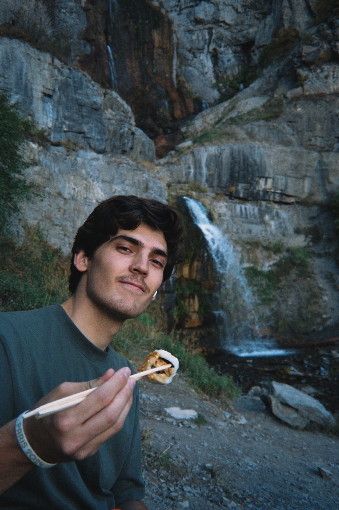

I'm a strategy student at BYU who likes building things.
I grew up all over the world, started college in computer science, and found out I like working with people more than code. Click a photo to see where I've been.

Think you're quick at Minesweeper? Clear the board without hitting a mine, and see if you can do it faster than me.
Click to open a square. Right-click, or turn on Flag mode, to mark a mine.